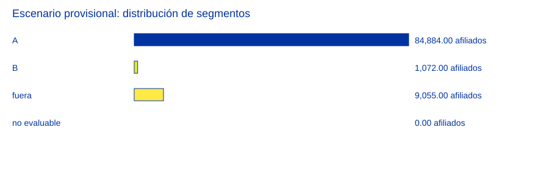
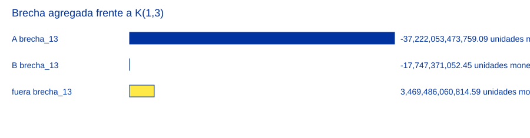
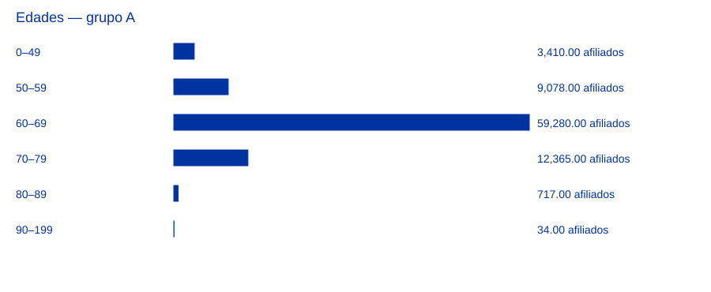

Escenario provisional de selección con K(1,3). No corresponde al criterio definitivo de elegibilidad. K(2) se calculará posteriormente mediante la metodología actuarial institucional; los resultados pueden cambiar. Universo reportado: 95.011 afiliados en retiro programado, corte 30 de septiembre de 2026. Datos reales.
| Segmento | Afiliados | % del universo |
|---|---|---|
| A | 84884 | 89.34% |
| B | 1072 | 1.13% |
| fuera | 9055 | 9.53% |
| no evaluable | 0 | 0.00% |





Las brechas son C menos K por afiliado y su suma; no son valoración actuarial de la bolsa. Capital +Bono es el campo indicado, sujeto a confirmar disponibilidad del bono, unidades y ausencia de doble conteo. Se excluyen de la evaluación valores faltantes, no numéricos, no finitos, negativos o K(1,3) menor que K(1). Sexo del titular no se presenta: sexo1 no está validado. Riesgo, beneficiarios y clasificaciones requieren confirmar sus definiciones. La supresión de celdas pequeñas es provisional y no sustituye la revisión institucional. Los totales numéricos usan valores disponibles por variable; las brechas usan exclusivamente evaluables. La identidad gráfica sigue las indicaciones del proyecto.